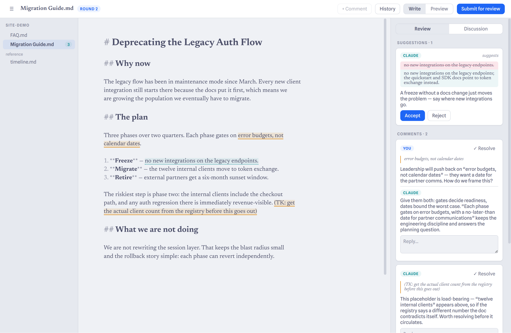
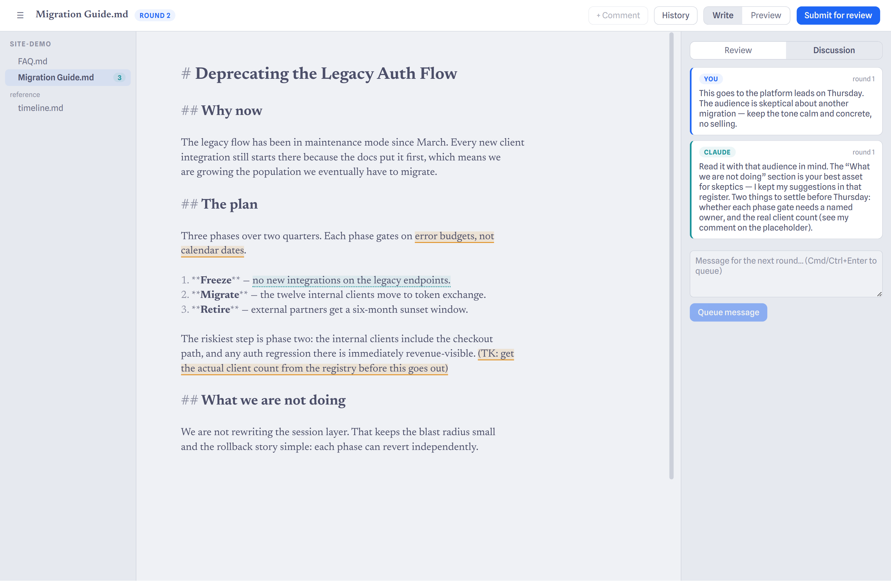
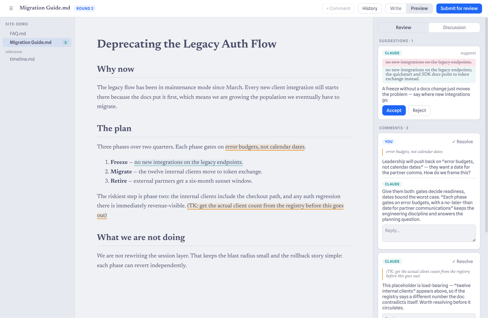

Suggestions, not edits
The agent can't touch your file. Every change it wants arrives as a diff you accept or reject — and rejections carry your reasoning into the next round, so it doesn't ask twice.
A markdown editor with a second reader
Margin is a desktop editor where you and Claude work on a document the way engineers review a pull request: anchored comments, concrete suggestions you accept or reject, in deliberate rounds. Your files stay plain markdown — on your disk, in your git history.

The agent can't touch your file. Every change it wants arrives as a diff you accept or reject — and rejections carry your reasoning into the next round, so it doesn't ask twice.
Threads anchor to exact passages and follow them through edits — yours, or anyone's. If the text disappears, the thread survives in the sidebar instead of silently dying.
Framing, audience, what good looks like — the sideband conversation lives next to the document and shapes every round, so you set the stage once.
Submit when you're ready, like sending a review. Each round commits before and after, so the document's history reads like a changelog of decisions.
The explorer shows every document in the repo with open-thread counts and modified markers. The agent reads your reference material for context, too.
The document is a normal .md file; review state lives in a
readable JSON sidecar beside it. No database, no lock-in, no sync
service. It's your repo.
Write normally. Select a passage and comment on it, queue framing
notes in the discussion, or leave a (TK: …) placeholder
the old-fashioned way.
Margin checkpoints to git and hands the document to Claude — which reads it (and your reference folder), answers every thread, and files its suggestions.
Accept or reject each suggestion, reply, resolve what's settled. When neither of you has anything meaningful left to say, the document is done.


Margin runs on macOS and Linux. Review rounds use your existing Claude Code login — no API keys to manage.
AppImage and pacman packages for Linux · dmg for macOS · updates arrive in-app